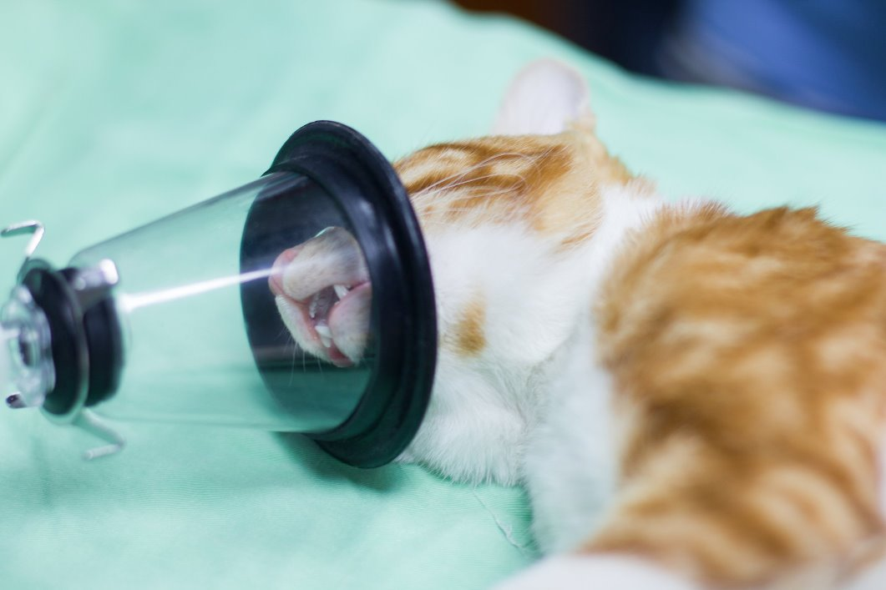
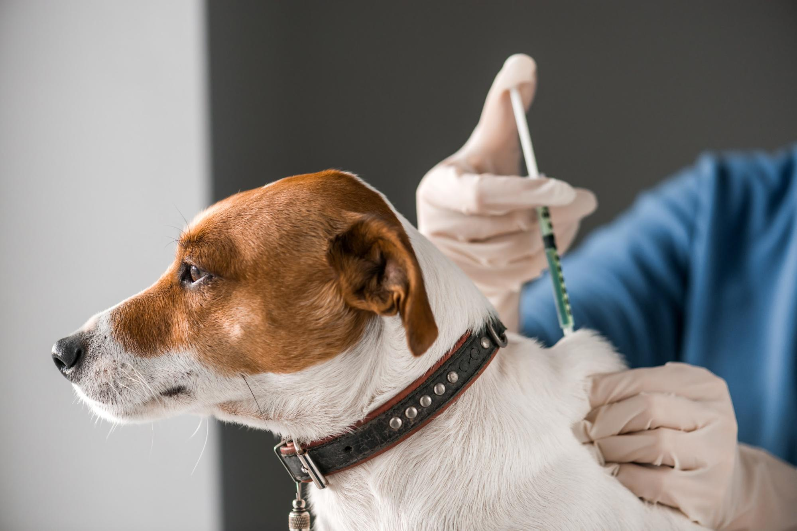
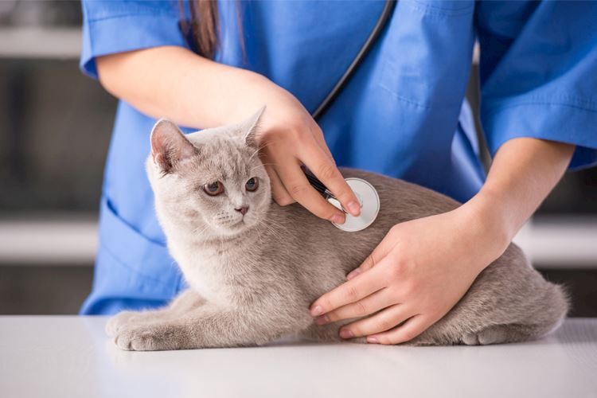
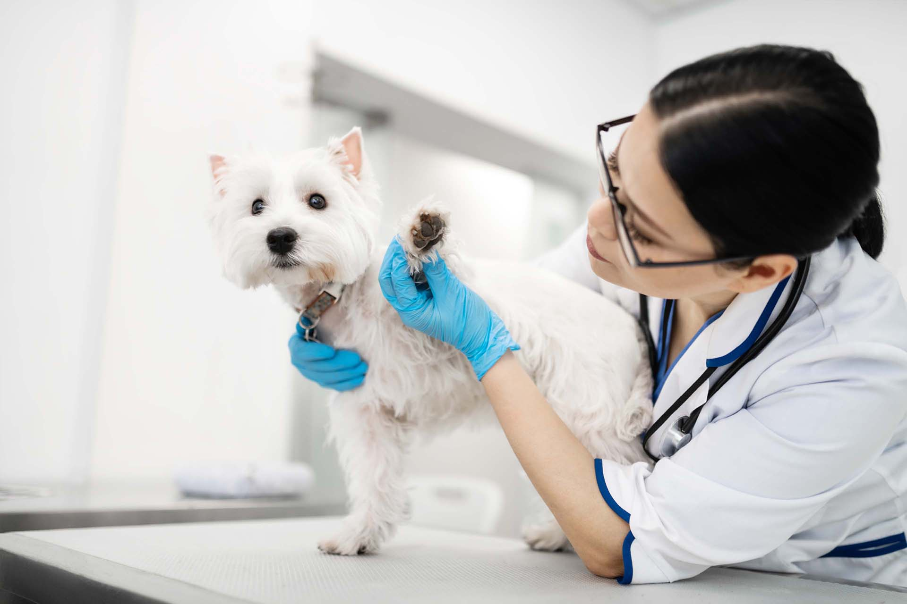
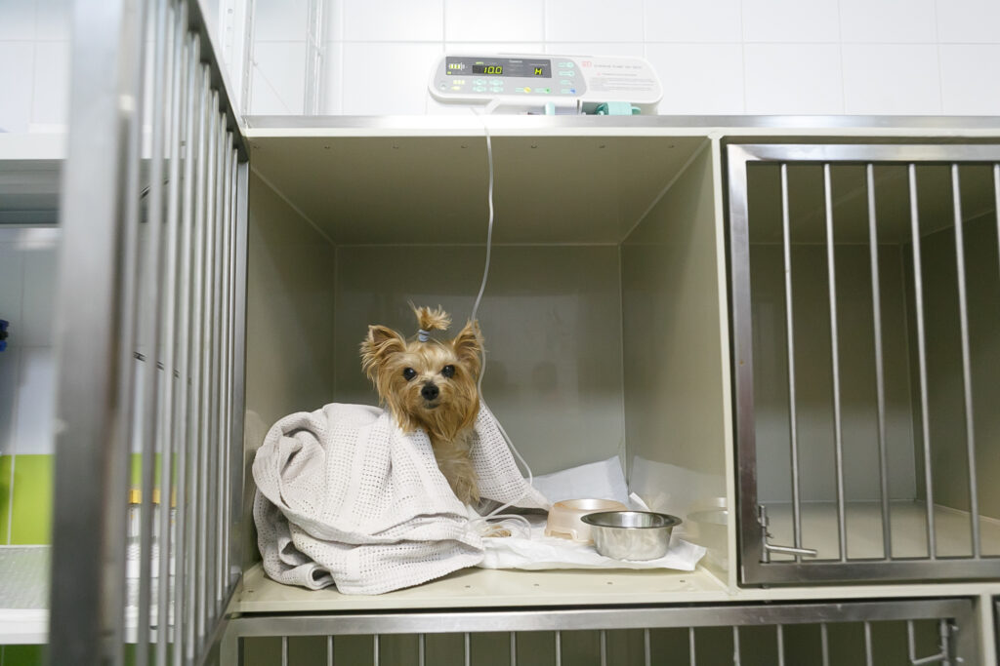
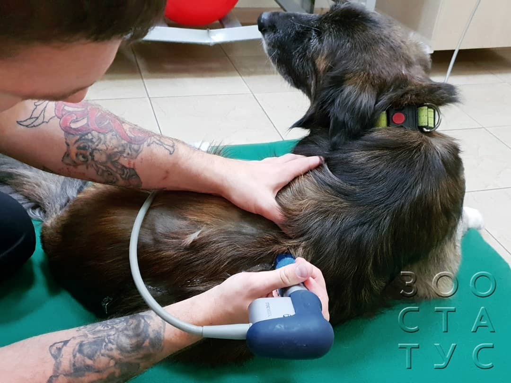
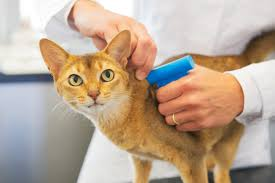

Наші Послуги
-

Анестезія
Анестезія забезпечує безболісне проведення процедур та операцій для ваших улюбленців, використовуючи сучасні безпечні препарати.
Вартість: 500 - 3 580 грн.
-

Вакцинації
Регулярні вакцинації допомагають захистити тварин від різних інфекційних хвороб та вірусів, що можуть бути небезпечними для їхнього здоров'я.
Вартість: 585 - 1 550 грн.
-

Діагностика
Наші діагностичні послуги включають сучасні методи для точного визначення захворювань та їх лікування.
Вартість: 1 550 - 15 720 грн.
-

Консультації
Надаємо консультації з питань догляду за тваринами, здоров'я та профілактики захворювань, а також поради щодо поведінки.
Вартість: 750 - 1 950 грн.
-

Стаціонар
Ми надаємо послуги стаціонару для тварин, які потребують тривалого лікування або спостереження під наглядом лікарів.
Вартість: 650 - 1 000 грн.
-

Терапія
Терапія включає лікування хронічних і гострих захворювань за допомогою медикаментозного лікування та інших методів.
Вартість: 200 - 600 грн.
-
Хірургія для тварин
Ми проводимо хірургічні операції різної складності, використовуючи сучасне обладнання та методики.
Вартість: 5 000 - 16 000 грн.
-

Чіпування тварин
Чіпування допомагає ідентифікувати ваших улюбленців у разі втрати або крадіжки, забезпечуючи їх повернення.
Вартість: 1 250 грн.